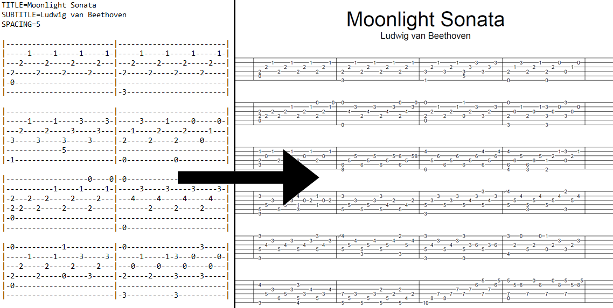
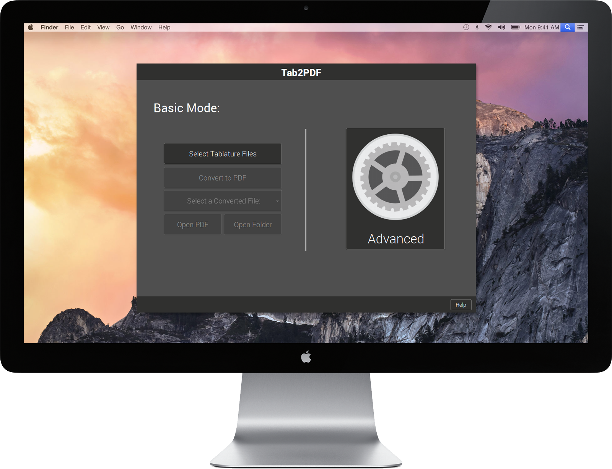

What is TAB2PDF?
Simply put, TAB2PDF allows for guitar tablature, written in a text file format to be cleanly converted to a PDF file that is also mildly customizable before conversion.
Why use TAB2PDF?
Simply put, TAB2PDF does what it needs to. It's an invaluable tool that does not confuse the user with a messy interface and useless options. The interface is streamlined to be friendly and usable, and it allows for a range of customization within the application. Plus it's open-source, and that's always nice.
Did you say open-source?
TAB2PDF is completely open-source and you can fork the project and all it's assets from GitHub.
Team Solo
This application was made by our dedicated team here at Team Solo. If you want to check some of us out; Yahya Ismail (@hayawi), Darren Tang (@tnatos), and Mina Zaki (@zinamaki) worked on the application, while Adham El-Shafie (@asmmee10) and Chris Kerley (@chriskerley78910) worked on the documentation.
Support or Contact
Having trouble with TAB2PDF or want to chat? Check out the user manual or give us a shout and we'll sort it out at contact@teamsolo.me.